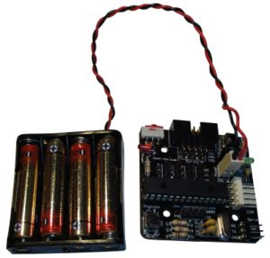
Contenido
[ocultar]- 1 Introduction
- 2 Mounting
- 2.1 Step 1: Twist the wires
- 2.2 Step 2: Insert the heat shrink tubes
- 2.3 Step 3: Apply solder in the wires ends
- 2.4 Step 4: Apply solder in the molex male pins
- 2.5 Step 5: Solder the pins to the wires
- 2.6 Step 6: Apply heat to the shrink tubes
- 2.7 Step 7: Insert the wirtes into the female molex connector
- 2.8 Step 8: Installing the batteries
- 3 Testings
- 4 Pictures
- 5 Links
- 6 News
Introduction
To power the electronics (Skycube board) a flat battery pack of 4 AAA is used. It can be connected to the molex connector on either sides of the board.
The parts needed are the following::
- A flat battery pack, for 4 AAA batteries
- A two-pin female molex connector
- Two pins for the molex connector
- Two pieces of heat shrink tube. Diameter: 2mm. Length: 10mm
| 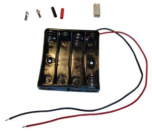 Beginning. Parts needed to mount the battery (Click to enlarge) |
 End. The battery pack is ready to use with the Skycube board (Click to enlarge) |

Mounting
Step 1: Twist the wires
Twist the battery pack wires. It is optional, but it is recommended to do it. The resulting wire is more compact and resistent. In addition it will easier to wire the robot.
| 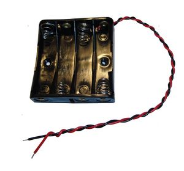 The battery pack with the twisted wires (Click to enlarge) |

Step 2: Insert the heat shrink tubes
Insert the heat shrink tubes in both wires, as shown in the figure. Do not apply heat still.
| 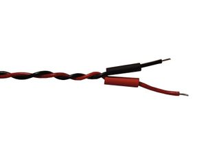 The heat shrink tubes in the wires (Click to enlarge) |

Step 3: Apply solder in the wires ends
Use the soldering iron to apply solder in both wire ends. This will make easier to solder the male molex pins
| 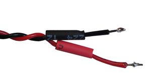 Wires with solder (Click to enlarge) |

Step 4: Apply solder in the molex male pins
Apply solder in the molex male pins. Just a little bit in the base is enough.
| 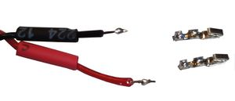 Pins with solder (Click to enlarge) |

Step 5: Solder the pins to the wires
Solder the pins to the wires. Use a flat nose plier for holding the pin. Bring the wire near the pin and apply heat with the soldering iron. As both the pin and cable have solder their soldering will be done very easily.
| 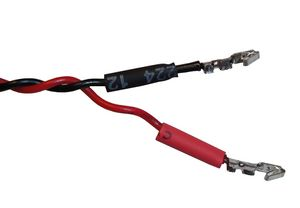 Wires with soldered pins |

Step 6: Apply heat to the shrink tubes
Place the heat shrink tubes in the lower half of each pin. Apply heat with the soldering iron. The shrink tubes will both prevent shortcircuits and make the union more resistent.
| 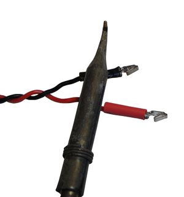 Applying heat to the shrink tubes |

Step 7: Insert the wirtes into the female molex connector
Insert the pins into the female molex connector. ¡¡¡PAY ATTENTION TO THE POLARITY!!!. The red wire will be inserted in the hole 1. For inserting it is recommended to use a flat nose plier. If the pin does not enter smoothly use the pliers to smash a little bit the parts that cannot be inserted. When the pin is inserted correctly a slight click will be hear and the wire will not get when pulled.
| 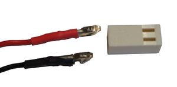 1) Wires connected to the molex connector. ¡Very important! (Click to enlarge) |
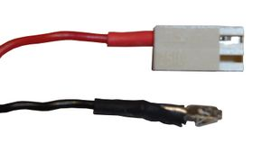 2) Insert the red wire into the hole 1 (Click to enlarge) |
 3) The molex connector is attached. ¡¡Be careful with the placement of wires!! (Click to enlarge) |
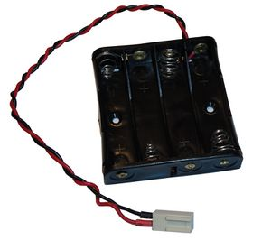 4) The battery pack is finished! (Click to enlarge) |


Step 8: Installing the batteries
Finally install the four AAA batteries. The battery pack is ready for testing!
| Battery pack with 4 AAA batteries (Click to enlarge) |
Testings
- Connect the batteries to the Skycube power top connector.
- Turn on the board by means of the red switch. The red led will turn on.
- Connect the batteries pack to the power bottom connector. The red led will also turn on.
| 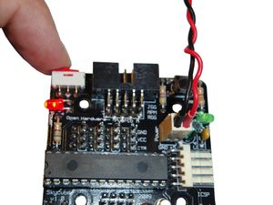 2) Switch on the board. The red led will turn on (Click to enlarge) | |
| 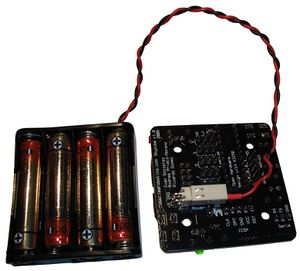 3) Connecting the batteries to the Skycube power bottom connector (Click to enlarge) |


Pictures
| Photo album |
Links
News
- Feb/19th/2011: This page is started